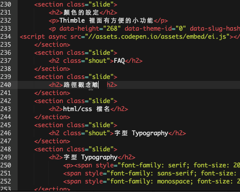

display
- 每個 HTML 元素都有一個預設的 display 值
- 通常是 block 或 inline 其中一個
- block：區塊元素；inline：行內元素

蔡智晴
CSS
講師：蔡智晴 / Candy Tsai
See the Pen Example 10 by Candy (@stringpiggy) on CodePen.
選擇器 {
屬性：值；
...
}
body {background: yellow;}
元素的最後外觀，來自於多個樣式定義
後者蓋過前者
在 <head> 裡加入：
<link rel="stylesheet" href="https://raw.github.com/necolas/normalize.css/master/normalize.css">
作用：統一各瀏覽器的外觀定義（說明）
用 Google 搜尋看看吧！
See the Pen Example 11 by Candy (@stringpiggy) on CodePen.
#id名稱 {color: red;}.class名稱 {color: red;}
h2.blah {color: red;}有 blah class 之 h2h2, h3 {color: red;}h2和h3這兩個元素都設成字的顏色為紅色#blah p {color: red;}在 id 為 blah 之元素裡面的 p
See the Pen Example14 by Candy (@stringpiggy) on CodePen.
See the Pen Example 12 by Candy (@stringpiggy) on CodePen.
url() 可以填絕對路徑（http 開頭、// 開頭）、相對路徑
相對路徑以 CSS 檔的位置起算
../ 是「上一層資料夾」。
看簡寫時
該屬性有無順序：有 (Summary 就會看到了)、無
initial value：預設值
animatable：是否有動畫
簡寫準則：如果沒有特定順序的屬性，當值有兩個以上時，就拉出來寫，這樣閱讀簡單也不容易錯
See the Pen Example 13 by Candy (@stringpiggy) on CodePen.
到 Thimble 開新 Project
練習重點：
在課堂練習二：自我介紹中加入 css
繳交期限：8/23 晚上 10:00
會公布給大家看唷：）
Thimble 裡面有方便的小功能
See the Pen Example 15 by Candy (@stringpiggy) on CodePen.
<div class="自訂值" id="自訂值">.........</div>
這裡一定要搞清楚唷！
請記得至課程網站繳交網址
See the Pen Example 21 by Candy (@stringpiggy) on CodePen.
See the Pen Example 17 by Candy (@stringpiggy) on CodePen.
first-child: 第一個; last-child: 最後一個; nth-child(n): 第n個
See the Pen Example 22 by Candy (@stringpiggy) on CodePen.
Serif 有襯線、明體
Sans Serif 無襯線；黑體
monospace 等寬、適合用來寫 code
font-family: '文泉驛微米黑', '微軟正黑體', sans-serif;
字體在使用者電腦裡沒有就使用下一個
最後一個通常放 Generic font family
See the Pen Example 16 by Candy (@stringpiggy) on CodePen.
font: size/line-height font-family;font: 12px/20px Airal, sans-serif;See the Pen Example 18 by Candy (@stringpiggy) on CodePen.

padding: 15px;padding-top: 15px;padding: 14px 15px 16px 17px;padding: 上 右 下 左;padding: 上下 左右;padding: 全部;See the Pen Example 19 by Candy (@stringpiggy) on CodePen.
See the Pen Example 20 by Candy (@stringpiggy) on CodePen.
文字由左邊往右邊，超過邊界就折到下一行
原地向左/右跑到底，被包圍
See the Pen Example 23 by Candy (@stringpiggy) on CodePen.
position: static | relative | absolute | fixed
可以拿之前自我介紹的Project來練習今天所學的功能！

See the Pen Specificity by Candy (@stringpiggy) on CodePen.
Animate.css可以讓你輕鬆無痛做動畫
今天就練習簡單的 CSS 動畫
See the Pen CSS Animation by Candy (@stringpiggy) on CodePen.
參考資料：CSS Tricks
基礎都學了差不多，剩下就是到處觀摩及不停地練習
大家練習完記得把成果網址繳交唷！
<link rel="stylesheet" href="路徑">
其中 rel 屬性中第二熱門的值就是 icon，那 icon 可以做什麼用呢？

<link rel="icon" href="路徑">
和使用者介面 UI 相關
練習
會選用 Mozilla Thimble 的原因是因為介面簡單、也有檔案階層的概念